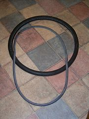

An inner tube is an inflatable torus that forms the interior of some pneumatic tires.
The tube is inflated through a valve stem and fits inside the tire casing.
The inflated inner tube provides structural support and suspension, while the outer
tire offers grip and protects the more fragile tube.